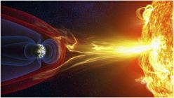

Горловчан призывают не допускать шалостей детей с огнем вблизи хлебных массивов
Государственный пожарный надзор МЧС ДНР предупреждает граждан: не допускайте
шалостей детей с огнём, особенно вблизи хлебных массивов
21 мая 2022
Памятка субъекту хозяйствования по вопросам ценообразования
Государственное регулирование цен в ДНР осуществляется в соответствии с Порядком
регулирования и контроля цен (тарифов) на территории Донецкой Народной Республики, утвержденным
Постановлением Совета Министров Донецкой Народной Республики от 03.06.2015 № 10–41 (далее – Порядок).
21 мая 2022
Горловчан предупреждают о сложных погодных условиях
Гидрометцентр МЧС ДНР сообщает, что 21 мая 2022 года на территории Донецкой Народной
Республики ожидается порывистый ветер 15-20 м/с.
21 мая 2022

Землю накроет мощная магнитная буря
Мощная магнитная буря накроет землю в ближайшие три дня - 20, 24 и 25-27 мая.
Фактически произойдет сразу три геомагнитных колебания, которые остро ощутит на себе все человечество.
18 мая 2022
Штормовое предупреждение от МЧС ДНР
Гидрометцентр МЧС ДНР сообщает, что к 21:00 часу 18 мая 2022 года на территории
Донецкой Народной Республики количество выпавших осадков достигнет
18 мая 2022
Что делать в случае укуса клеща?
Многих интересует, какие действия следует предпринять в случае, если укусил клещ.
18 мая 2022
В Горловке проведен мониторинг цен на топливо
Администрация города Горловка на регулярной основе проводит мониторинг цен на
топливо на заправках города. Были обследованы 9 топливных компаний, реализующих топливо.
18 мая 2022
Комментарии ЦРБ ДНР об использовании наличной гривны на территории Республики
Представители Центрального Республиканского Банка ДНР дают комментарии относительно
использования наличной украинской гривны на территории Донецкой Народной Республики, относительно приема
украинской гривны, как средства платежа на территории Донецкой Народной Республики
18 мая 2022
Гопрловчанам сообщают о состоянии атмосферного воздуха в Горловке в апреле 2022
года
Состояния воздушного бассейна города Горловка находится под постоянным контролем на
наличие загрязняющих веществ - пыли, диоксида серы, оксида углерода, диоксида азота, оксида азота,
сероводорода, фенола, аммиака и формальдегида.
17 мая 2022